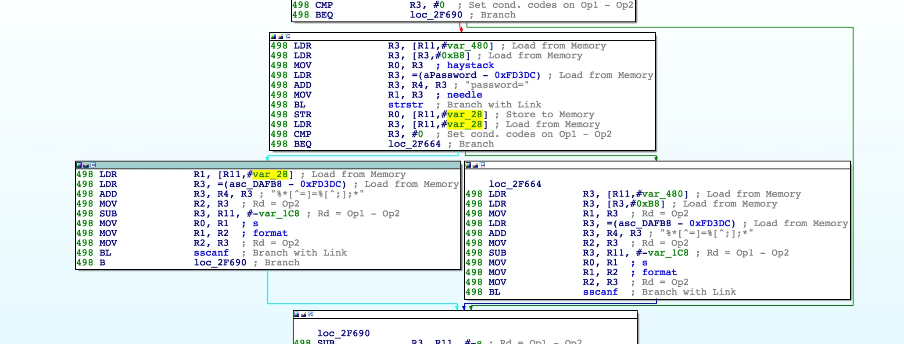

0x01 漏洞分析
漏洞文件是bin/httpd
出现问题的地方是 R7WebsSecurityHandler 函数调用了sscanf，此处会将cookie中password后的值都存到到栈上，从而造成了溢出

动态调试的时候,发现崩溃的时候pc并不是我们构造的输入，而是读取R3寄存器指向的值，此时R3中保存的为0x61616161，非法地址，故在此崩溃
于是继续向下分析处理逻辑，发现它会检测拷贝到栈上的字符串结尾的情况。如果结尾包含”.”,且”.”之后为gif,png,js,css,jpg,jpeg中的任何一个，都可以跳过接下来的一些处理逻辑，直接到函数返回的地方
0x02 漏洞利用
因为Tenda的NX和ASLR都开启了，所以我们的任务就是分别绕过NX和ASLR。
绕过NX
arm绕过nx不同于x86，我们构造如下的ROP链。
绕过aslr
常规爆破基本不可行，时间代价巨大，因为crash后每次libc的基址都会变
故我们利用之前我们找到的Tenda另外一个受限后门中相关逻辑中的gadget。该gadget位于httpd中，不受aslr影响，且没有PIE
虽然该漏洞受\0截断影响，由于目标为arm小端，故有效地址可以拷贝到栈上
如此便可以构造如下布局，getshell